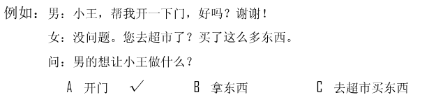
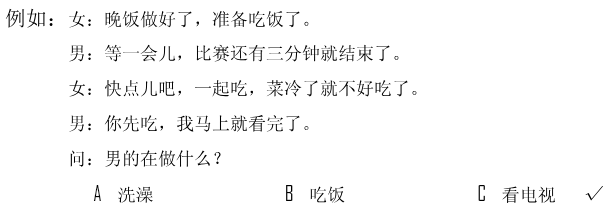
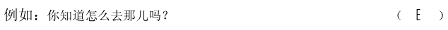
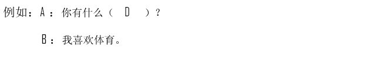
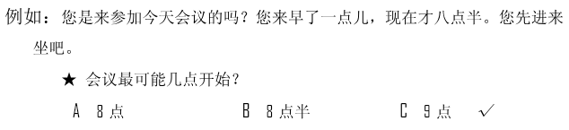
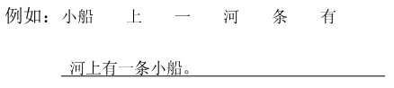
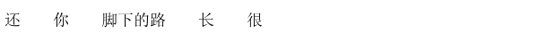

🎧 Phần nghe · Câu 1–40
Bấm phát để bắt đầu nghe. Thời gian làm bài bắt đầu khi bạn nghe hoặc chọn đáp án.
Nghe · Phần 1 · Câu 1–5
Nghe và chọn hình A–F phù hợp.

Nghe · Phần 1 · Câu 6–10
Nghe và chọn hình A–E phù hợp.
Nghe · Phần 2 · Câu 11–20
Nghe và chọn ✓ (đúng) hoặc × (sai).

Câu 11
★他没带照相机。
Câu 12
★外面下雪了。
Câu 13
★邻居是位老人。
Câu 14
★他喜欢喝牛奶。
Câu 15
★路是人走出来的。
Câu 16
★医生认为爸爸的耳朵没问题。
Câu 17
★我和李先生是同学。
Câu 18
★朋友生病了。
Câu 19
★他正在打电话。
Câu 20
★那儿的人习惯说左右。
Nghe · Phần 3 · Câu 21–30
Nghe và chọn đáp án A, B hoặc C.

Câu 21
Câu 22
Câu 23
Câu 24
Câu 25
Câu 26
Câu 27
Câu 28
Câu 29
Câu 30
Nghe · Phần 4 · Câu 31–40
Nghe hội thoại và chọn đáp án A, B hoặc C.

Câu 31
Câu 32
Câu 33
Câu 34
Câu 35
Câu 36
Câu 37
Câu 38
Câu 39
Câu 40
Đọc · Phần 1 · Câu 41–45
Chọn câu A–F phù hợp để ghép với từng câu.

Đọc · Phần 1 · Câu 46–50
Chọn câu A–E phù hợp để ghép với từng câu.
Đọc · Phần 2 · Câu 51–55
Chọn từ A–F điền vào chỗ trống.
Đọc · Phần 2 · Câu 56–60
Chọn từ A–F điền vào chỗ trống của hội thoại.

Đọc · Phần 3 · Câu 61–70
Đọc đoạn văn và chọn đáp án đúng.

Câu 61
喂？你在哪儿呢？你声音大一点儿好吗？我刚才没听清楚你在说什么。
★那个人的声音很：
★那个人的声音很：
Câu 62
“笑一笑，十年少。”这是中国人常说的一句话，意思是笑的作用很大，笑一笑会让人年轻10岁。我们应该常笑，这样才能使自己年轻，不容易变老。
★根据这段话，可以知道：
★根据这段话，可以知道：
Câu 63
每年秋季的10月4日，这个城市都会举行“啤酒节”，会有很多国家的人前来参加。啤酒节上，除了喝啤酒，这儿的歌舞表演更是让人难忘，你还会在这儿遇到很多名人。
★在啤酒节上：
★在啤酒节上：
Câu 64
中午看新闻了没？我很快就可以坐15号地铁了。15号地铁经过我家附近，以后，我上班就方便多了，从我家到公司只要花20分钟，比坐公共汽车快多了。
★15号地铁：
★15号地铁：
Câu 65
新买的这个空调比以前那个旧的好多了，它的声音非常小，几乎没有声音，不会影响我们的学习和休息。
★新空调怎么样？
★新空调怎么样？
Câu 66
你手中拿着一件东西不放时，你只有这一件东西，如果你愿意放开，你就有机会选择其他的。
★放开手中的东西，可以：
★放开手中的东西，可以：
Câu 67
猫和人不同，它们不怕黑，因为它们的眼睛在晚上更容易看清楚东西。我们家的那只猫就总是习惯白天睡觉，晚上出来走动。
★关于那只猫，可以知道什么？
★关于那只猫，可以知道什么？
Câu 68
茶是我的最爱，花茶、绿茶、红茶，我都喜欢，天冷了或者你工作累了的时候，喝杯热茶，真是舒服极了。
★关于他，可以知道：
★关于他，可以知道：
Câu 69
你好，我今天早上才发现，昨天从你们这儿拿回去的衣服不是我的，衬衫和裤子都不是我的，这条裤子太长了，你帮我看一下，是谁拿错了。
★根据这段话，可以知道他：
★根据这段话，可以知道他：
Câu 70
孩子在学会说话以前，就已经懂得了哭和笑，他们借这样的办法来告诉别人自己饿了、生气了、不舒服或者很高兴、很满意。慢慢大一点以后，他们就开始用一些简单的词语来表示自己的意思了。
★孩子笑可能表示：
★孩子笑可能表示：
Viết · Phần 1 · Câu 71–75
Sắp xếp các từ đã cho thành câu hoàn chỉnh.
Phần viết được đối chiếu với đáp án mẫu; bỏ qua khoảng trắng và dấu câu. Điểm hiển thị là điểm luyện tập.

Câu 71
Câu 72
Câu 73

Câu 74
Câu 75
Viết · Phần 2 · Câu 76–80
Nhập chữ Hán phù hợp với pinyin vào từng ô trống.